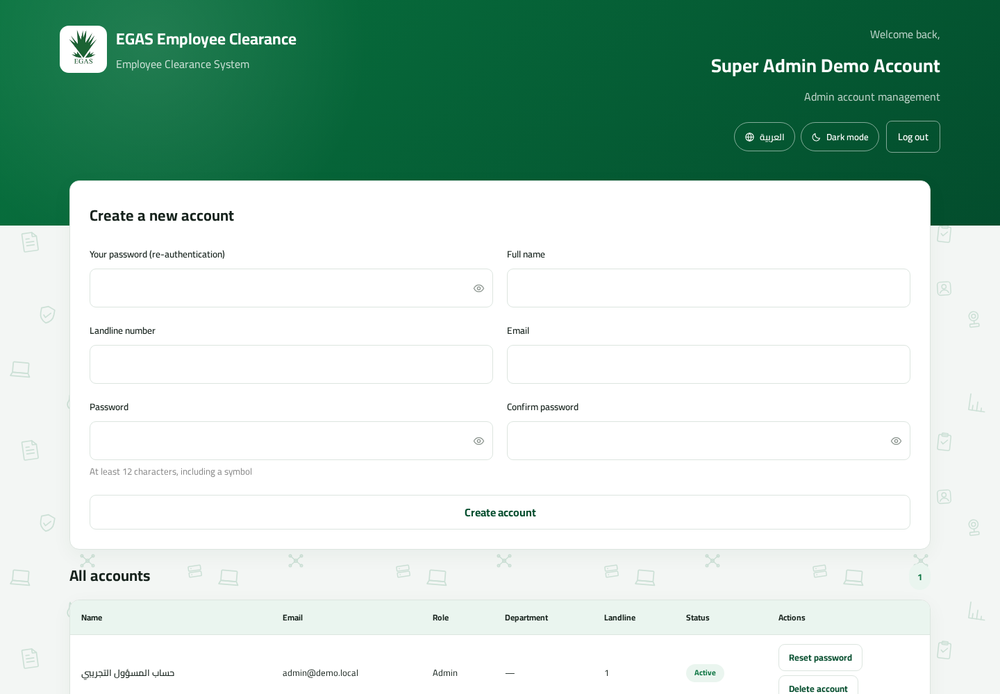

Root Account Administration · Version 2.0
Super Administrator Manual
First-run setup, Admin-account management, password recovery, and protection of the system’s sole Super Admin account.
First-run setup, Admin-account management, password recovery, and protection of the system’s sole Super Admin account.
The single Super Admin creates and maintains Admin accounts. It cannot manage operational users or clearance requests, and no account—including itself—can reset or delete the Super Admin.
| 1. First-run setup and sign-in | Bootstrap |
| 2. Create Admin accounts | Daily task |
| 3. Reset or delete Admin accounts | Maintenance |
| 4. Lockout prevention and reference | Critical control |
When the database contains zero users, the login page redirects to the one-time setup screen. This is the only unauthenticated account-creation flow.

Normal login screen after first-run setup is complete.
There is no self-registration or emailed reset link. On an Admin's very first login, the password is the exact one the Super Admin entered when creating the account — it is already the Admin's real, permanent password, and the application does not force a change. A change is only forced if the Super Admin later issues a one-time password through Reset password (see section 3); only that flow forces a new permanent password before any other authenticated route can be used.

Super Admin dashboard. Only Admin accounts appear because that is the Super Admin’s management boundary.
| Super Admin can | Super Admin cannot |
|---|---|
| Create/list/reset/delete Admin accounts | Create another Super Admin |
| Provide assisted recovery to Admins | Create File Management or reviewer accounts directly |
| Maintain enough Admin coverage | View or act on clearance requests |
| Manage Admins only | Reset or delete itself |
Neither action targets the current Super Admin account. This is enforced by the server, not merely hidden in the interface.
| Problem | Meaning | Action |
|---|---|---|
| Setup page does not open | At least one user already exists. | Use normal login; do not erase users to bypass the guard. |
| Operational role is unavailable | Super Admin manages Admins only. | Create/use an Admin account for operational users. |
| Super Admin is not listed | Self-management is intentionally prohibited. | Follow the approved recovery procedure; do not manipulate production ad hoc. |
| Admin sees “Set new password” | The reset password is temporary. | The Admin must choose a compliant permanent password. |
| Clearance request is unavailable | Super Admin has no clearance-data permission. | Use the appropriate operational role; do not broaden access. |